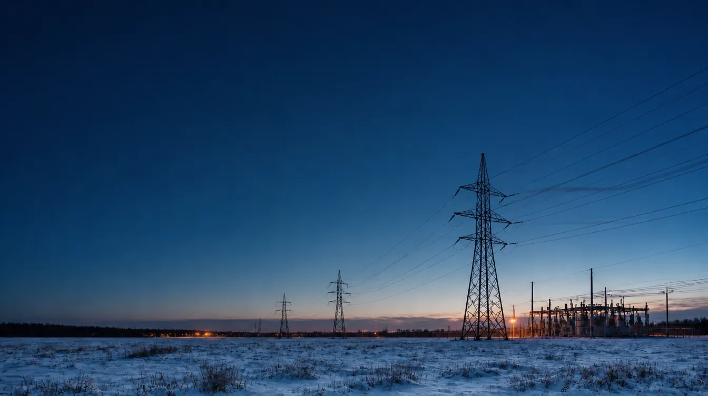
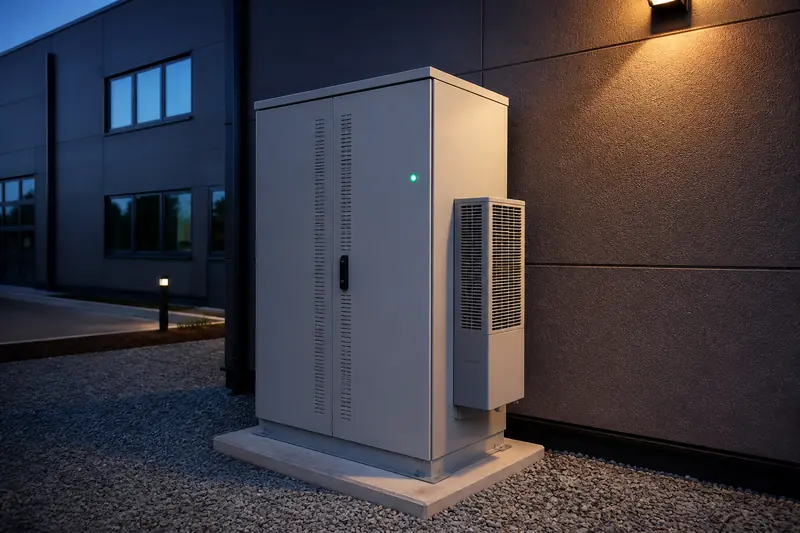
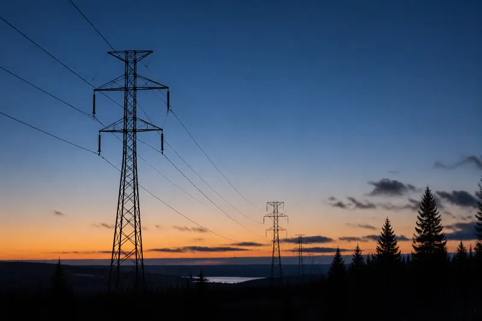

Energiavarastot ja aurinkosähkö · yrityksille ja maanomistajille
Yhteinen verkko.
Itsenäinen energia.
Rakennamme yritysten energiaomavaraisuutta: aurinkosähkö, energiavarastot ja ohjaus tekevät liittymästänne aktiivisen osan sähköjärjestelmää. Ja mitä se kohteessanne oikeasti tuottaa — siihen vastaamme kirjallisesti, ennen kuin mitään allekirjoitetaan.
50,000 Hz on sähköverkon tasapaino. Kun taajuus poikkeaa siitä, tuotanto ja kulutus eivät kohtaa — ja kantaverkkoyhtiöt, Suomessa Fingrid ja Virossa Elering, maksavat siitä, että energiavarastot palauttavat tasapainon sekunneissa. Siihen reservimarkkinat perustuvat.
Mitä toimitamme
Paneelit, invertterit ja asennus — mitoitettuna kulutukseenne.

02 ENERGIAVARASTOTTeollisuusluokan akkujärjestelmät ja niiden ohjaus.

03 RESERVIMARKKINAYHTEYSKohteen liittäminen reservimarkkinoille lisensoidun aggregaattorin kautta.
Mitä se tarkoittaa kohteessanne.
Tehomaksut alas
Varasto leikkaa kulutushuiput — vaikutus näkyy verkkolaskulla. Lasketaan teidän omista kulutustiedoistanne.
Pörssisähkö eduksi
Lataus halvoilla tunneilla, käyttö kalliilla. Optimoinnin arvo lasketaan toteutuneista hinnoista.
Liittymän laajennus vältettävissä
Varasto voi antaa huipputehon liittymän yli — laajennuksen tarve arvioidaan ennen hankintaa.
Oma tuotanto omaan käyttöön
Aurinkosähkön ylijäämä varastoon ja käyttöön silloin, kun se on arvokkainta.
Varavoima häiriöissä
Saarekekäyttöön suunniteltu järjestelmä syöttää kriittistä kuormaa. Vahvistetaan kohdekohtaisesti.
Reservitulo lisänä
Aggregaattorin arviona ja skenaarioina — myös oletuksella, että hinnat puolittuvat. Ei koskaan lupauksena.
Kaksi lähtötilannetta
Aurinkosähköä tai ei — aloitamme samasta paikasta: kulutustiedoistanne.
Akku parantaa investointia, jonka olette jo tehneet.
Liittymässä oleva tuotanto edellyttää kirjallisia vastauksia neljään tekniseen kysymykseen ennen tarjousta: takasyötön esto, tehonrajoitus, mittaus ja toiminta tiedonsiirron katketessa. Me teemme sen selvitystyön ja annamme vastaukset kirjallisesti.
Suunnittelemme kokonaisuuden yhtenä järjestelmänä.
Aurinkosähkö, energiavarasto ja ohjaus mitoitetaan yhdessä kulutustietojenne pohjalta. Alusta asti kokonaisuutena suunniteltuna mitään ei sovita jälkikäteen, vastuu on yhdellä taholla ja verkkoyhtiön hyväksyntä haetaan kerralla.
Kenelle
Aloitamme sieltä, missä energia on arvovalinta.
Omistajat, joilla on aate
Kurssi- ja retriittikeskukset, ekokylät, pienet hotellit, luomutilat, kulttuuritalot. Päätätte itse, mistä sähkönne tulee ja kenen kanssa asioitte.
Maaseudun yritykset
Viljankuivaamot, meijerit, kylmävarastot, konepajat, logistiikka maaseutuliittymillä. Akku voi siirtää liittymän vahvistusta vuosilla, pienentää tehomaksuja ja auttaa sähkökatkon yli.
Yritys- ja teollisuuskohteet
Hotellit, hoivakiinteistöt, teollisuus, kiinteistösalkut. Takaisinmaksu, tasekäsittely ja toimittaja, joka vastaa luvuistaan vielä viidentenä vuonna.
Jos teillä on tarjous kädessä ja haluatte tietää kestääkö sen takaisinmaksuluku kosketuksen todellisuuteen — se on täsmälleen sitä työtä, jota me teemme.
Teemme sen riippumatta siitä, ostatteko meiltä koskaan mitään.
Miksi meihin voi luottaa
Investointipäätöstä ei tehdä kenenkään sanan varassa.
Siksi tekniset ratkaisut osoitetaan standardeilla, laitteiden ominaisuudet valmistajan kirjallisella vahvistuksella ja liittymän ehdot verkkoyhtiön omalla vastauksella. Jokainen luku kantaa lähteensä — ja se, mitä emme voi dokumentoida, ei päädy tarjoukseemme.
Säästöt ennen tuottoja
Tehomaksujen alentaminen ja pörssihinnan optimointi lasketaan teidän omista kulutustiedoistanne. Ne ovat laskettavissa, eivät arvattavissa.
Reservitulo on lisä, ei lupaus
Reservitulo voi olla merkittävä lisä — ja juuri siksi näytämme sen rehellisesti: aggregaattorin omana arviona ja skenaarioina, myös sillä oletuksella, että hinnat puolittuvat. Laskelma kestää, vaikka markkina muuttuu.
Verkkoyhtiön kanta ensin
Suurin epävarmuus ei ole laite vaan lupa. Selvitämme verkkoyhtiön kannan, ennen kuin sidotte pääomaa — ei käyttöönotossa, jossa saman asian selviäminen on kalleimmillaan.
Laitevalinta ei ole se päätös, joka ratkaisee — laitteisto on helpoin osa. Ratkaisevat kysymykset ratkaistaan ennen sitä, ja eteneminen on kuvattu vaihe vaiheelta: Näin se etenee.
REFERENSSIT
Ensimmäiset kohteet dokumentoidaan tähän mittausdatalla — luvut ennen ja jälkeen, lähteineen. Emme julkaise referenssejä, joita emme voi todentaa.
Aloitetaan kulutustiedoistanne.
Kohdekartoitus on maksuton eikä sido teitä mihinkään. Saatte kirjallisen näkemyksen — ja pidätte sen joka tapauksessa.
Energiavarastot
Kartoituksesta toimivaan, dokumentoituun ja tuottavaan järjestelmään.
Olemme riippumattomia valmistajista. Valitsemme laitteen kohteeseen emmekä sovita kohdetta laitteeseen, jota satumme myymään. Jos paras ratkaisu kohteeseenne ei tule meiltä, sanomme senkin.
KOHDEKARTOITUS → ANALYYSIPAKETTI → TOTEUTUS → ELINKAARI
Kohdekartoitus
Keräämme vakiolomakkeella liittymä- ja kulutustietonne, analysoimme kuormitusprofiilin ja annamme alustavan näkemyksen siitä, mitä akku kohteessanne tekisi — mukaan lukien sen, näyttääkö se verkkoyhtiön näkökulmasta toteutuskelpoiselta.
Joskus vastaus on ei. Sanomme sen, ja olette menettänyt keskustelun ettekä vuotta.
VAIHEET 01–02
Analyysipaketti
Dokumentti, joka menee hallituksenne kokoukseen ilman meitä. Säästölaskelma omista kulutustiedoistanne laskentatapoineen. Mitoituksen perustelu. Liittymätehon tarkastelu: voiko varasto siirtää tai välttää liittymän laajennuksen. Reservitulo aggregaattorin arviona, rinnalla skenaario hintojen laskusta. Riski- ja investointianalyysi. Oletukset ja rajaukset selkeästi eriteltyinä. Verkkoyhtiön tilanne kirjallisena. Rahoitusvaihtoehdot.
Päätös tehdään kokouksessa, jossa myyjä ei ole läsnä. Esitys ei pääse sinne — kirjallinen analyysi pääsee: sen voi lähettää talousjohtajalle, kyseenalaistaa ja puolustaa. Yleensä juuri se ratkaisee.
VAIHEET 03–04
Toteutus
Laitehankinta. Asennuksen koordinointi sertifioitujen sähköurakoitsijoiden kanssa. Verkkoyhtiöprosessi kyselystä jännitteen kytkemiseen. Käyttöönottodokumentaatio. Liittyminen reservimarkkinoiden aggregaattoriin. Aikataulu vahvistetaan laitteiden saatavuuden mukaan.
Saatte kattavan luovutuspaketin — ette kansiota, joka kasattiin kiireessä viimeisenä iltapäivänä.
VAIHEET 05–06
Elinkaari
Suorituskyvyn seuranta antamaamme analyysiin verrattuna. Aggregaattorisuhteen hallinta. Laajennussuunnittelu. Takuuasiat.
Olemme paikalla myös kolmantena vuonna, ja ensimmäisen vuoden luvut ovat edelleen tarkistettavissa. Se on tietoinen rajoite sille, mitä olemme valmiita lupaamaan ensimmäisenä vuonna.
VAIHE 07
Nämä neljä vaihetta ovat sama matka, jonka viikkotason järjestys ja kestot on kuvattu sivulla Näin se etenee — vaihenumerot viittaavat siihen.
Erikseen
Konsultointi ilman laitekauppaa.
Kaikki kohteet eivät tarvitse meiltä laitetta.
- Toteutettavuuden arviointi
- Verkkoyhtiöprosessin tuki
- Teknisen vaatimustenmukaisuuden tarkastus
- Muilta toimittajilta saatujen tarjousten riippumaton arviointi
Aurinkosähkö + akku
Aurinko tuottaa.
Akku ajoittaa.
Yhdessä ne tekevät kiinteistöstänne tuottajan, joka käyttää oman sähkönsä silloin, kun se on arvokkainta. Toimitamme koko järjestelmän alusta asti — tai täydennämme sen, joka teillä jo on.
Kaksi tietä samaan järjestelmään
Koko järjestelmä kerralla.
Aurinkosähkö, varasto ja ohjaus suunnitellaan yhtenä kokonaisuutena kulutustiedoistanne. Jälkikäteen sovitettavaa ei jää — miten, kerrotaan alempana.
Akku täydentää investoinnin.
Neljä teknistä kysymystä ratkaistaan kirjallisesti ennen tarjousta. Sen jälkeen akun lisääminen on hallittu sähkötekninen työ — kysymykset ja ratkaisu alla.
Teillä on jo aurinkosähkö
Neljä kysymystä, jotka ratkaistaan ensin.
MITTAUS LIITTYMÄPISTEESSÄ SYÖTTÄÄ OHJAINTA · YHTEYDEN KATKETESSA JÄRJESTELMÄ ASETTUU TURVALLISEEN TILAAN
Mittaus liittymäpisteessä ja ohjaus, jolla on vikaturvallinen tila.
Liittymäpisteeseen asennettava mittausyksikkö seuraa tehon suuntaa ja suuruutta reaaliajassa ja syöttää tiedon paikalliselle ohjaimelle. Kun tuotanto uhkaa syöttää verkkoon yli sallitun, ohjain rajoittaa sitä. Jos tiedonsiirto katkeaa, järjestelmä asettuu turvalliseen tilaan eikä hallitsemattomaan — ja juuri sen verkkoyhtiö haluaa nähdä, ennen kuin se hyväksyy mitään.
Komponentit ovat vakiotuotteita, saatavilla vakiintuneilta suomalaisilta toimittajilta lyhyillä toimitusajoilla. Asennuksen toteuttaa aina sertifioitu sähköurakoitsija.
Tässä ei ole mitään eksoottista. Ratkaisu on vakiotekniikkaa — työ on sen selvittämisessä kunnolla, etukäteen ja kirjallisesti.
Mitä selvitämme ennen tarjousta
- Akkujärjestelmän ja olemassa olevien inverttereidenne yhteensopivuus
- Ottaako akun ohjain vastaan ulkoisia tehonrajoituskäskyjä ja miten ne osoitetaan
- Takasyötön esto ja mittaus liittymäpisteessä
- Toiminta tiedonsiirron katketessa — mihin tilaan järjestelmä asettuu
- Miten akku ja olemassa oleva tuotanto koordinoidaan keskenään ja aggregaattorin kanssa
- Onko olemassa olevassa asennuksessanne jotakin muutettavaa — ja mitä
Kirjallisesti. Valmistajalta ja verkkoyhtiöltänne. Ennen kuin esitämme teille hintaa.
Ei vielä aurinkosähköä?
Kokonaisuus kannattaa suunnitella kerralla.
Toimitamme myös koko järjestelmän: aurinkosähkön, energiavaraston ja ohjauksen yhtenä suunniteltuna kokonaisuutena. Silloin edellä kuvatut kysymykset ratkaistaan suunnittelupöydällä — ei jälkikäteen selvittämällä.
Oikea koko molemmille
Tuotanto ja varasto mitoitetaan samoista kulutustiedoista — kumpikin oikean kokoiseksi ja toisiaan varten.
Valinta perustellaan
Hybridi-invertteri vai erillinen järjestelmä — ratkaisu valitaan kohteen mukaan ja perustellaan kirjallisesti. Emme ole sidottuja yhteenkään valmistajaan.
Tehonhallinta sisään, ei päälle
Takasyötön hallinta ja mittaus suunnitellaan järjestelmään alusta asti, eikä niitä soviteta jälkikäteen.
Yksi suunnitelma, yksi toimitus
Yksi verkkoyhtiöprosessi ja yksi taho, joka vastaa kokonaisuudesta — suunnittelusta käyttöönottoon ja seurantaan.
Reservimarkkinat · päivitetään säännöllisesti
Reservimarkkinat: mitä ne ovat, mitä ne vaativat ja mitä emme niistä lupaa
Tämä sivu selittää mekanismin. Se ei sisällä tuottolukuja — ja alempana kerromme, miksi.
Perusasia
Sähköverkko on tasapainossa vain silloin, kun tuotanto ja kulutus ovat yhtä suuret joka hetki.
Kun ne eivät ole, taajuus liikkuu. Pohjoismaisessa ja mannereurooppalaisessa järjestelmässä tavoite on 50,000 Hz. Jos kulutus ylittää tuotannon, taajuus laskee. Jos tuotanto ylittää kulutuksen, taajuus nousee.
Ennen tämä hoidettiin suurilla laitoksilla, jotka säätivät tuotantoaan. Sääriippuvaisen tuotannon kasvaessa ja säädettävän kapasiteetin poistuessa kantaverkkoyhtiö ostaa tätä säätökykyä markkinoilta — myös akuilta.
Akku sopii tähän poikkeuksellisen hyvin, koska se reagoi sekunneissa ja voi sekä ottaa vastaan että syöttää.
Tuotteet
Reservituotteet ja mitä kukin vaatii akulta
Eri tuotteet edellyttävät eri reaktionopeutta ja eri kestoa. Kesto määrää akun energiamitoituksen suhteessa tehoon — tämä on se kohta, jossa väärin mitoitettu järjestelmä ei kelpaa siihen markkinaan, jolle se myytiin.
| Tuote | Mitä se tekee | Vaatimus akulta |
|---|---|---|
| FCR-N | Taajuuden jatkuva hienosäätö normaalitilanteessa. Reagoi pieniinkin poikkeamiin. | Kyky sekä ottaa että antaa tehoa symmetrisesti. Vaatii tyypillisesti pisintä kestoa molempiin suuntiin. |
| FCR-D | Häiriöreservi. Aktivoituu vasta, kun taajuus poikkeaa merkittävästi — esimerkiksi kun suuri tuotantoyksikkö irtoaa verkosta. | Nopea aktivoituminen, lyhyempi kesto. Yleisin lähtökohta yritys- ja teollisuuskokoluokan akuille. |
| aFRR | Automaattinen taajuuden palautus. Vie taajuuden takaisin tavoitearvoon FCR:n jälkeen. | Pidempi kesto ja jatkuva ohjattavuus. Vaatii enemmän energiaa suhteessa tehoon. |
| mFRR | Manuaalinen reservi. Aktivoidaan käskystä pidempikestoisiin tilanteisiin. | Pisin kesto. Harvemmin yrityskokoluokan akun ensisijainen tuote. |
Tarkat kestovaatimukset ja tekniset ehdot määrittelee kantaverkkoyhtiö — Suomessa Fingrid, Virossa Elering — ja ne muuttuvat. Käytämme aina voimassa olevaa ehtoa emmekä muistinvaraista lukua.
Miten kohde pääsee markkinalle
Aggregaattori
Yksittäinen teollisuusakku on liian pieni osallistuakseen suoraan. Aggregaattori kokoaa useita kohteita yhdeksi tarjoukseksi markkinalle, hoitaa tarjoamisen ja jakaa tuoton. Aggregaattori — ei laitetoimittaja — määrittää mihin tuotteisiin kohde kelpaa.
Esikvalifiointi
Kantaverkkoyhtiö edellyttää, että yksikkö osoittaa täyttävänsä tuotteen tekniset vaatimukset. Tämä on mittauksin todennettava prosessi, ei ilmoitusasia.
Mittaus ja tiedonsiirto
Reaaliaikainen mittaustiedon vaihto on edellytys osallistumiselle. Suuremmissa kohteissa vaatimukset ovat tiukemmat.
Verkkoyhtiön hyväksyntä
Eri prosessi kuin kantaverkkoyhtiön. Jakeluverkkoyhtiö päättää liittymäkohtaisesti, mitä liittymään saa kytkeä ja millä ehdoilla.
Tärkein kohta tällä sivulla
Miksi emme julkaise tuottolukuja
Jokainen akkutarjous sisältää takaisinmaksuluvun. Ratkaisevaa on, mille oletuksille se on rakennettu — ja kuka seisoo niiden takana vielä viidentenä vuonna.
Reservihinnat vaihtelevat tunneittain ja määräytyvät markkinalla. Kukaan ei tiedä ennalta, mitä ne ovat ensi vuonna.
Ne ovat laskusuunnassa. Suuren mittakaavan varastointi tulee sekä Suomen että Viron markkinoille. Kun sata megawattia varastointikapasiteettia tulee reservimarkkinalle, hinnat puristuvat. Se ei ole ennuste vaan laskutoimitus.
Emme tiedä, miten kohde kvalifioituu, ennen kuin aggregaattori on sen arvioinut. Se arvio ei ole olemassa siinä vaiheessa, kun useimmat tarjoukset kirjoitetaan.
Luvun, jonka annamme, on kestettävä tarkastelu vielä viidentenä vuonna. Siksi rakennamme laskelman säästöille ja esitämme reservitulon lisänä: aggregaattorin omana arviona, jonka rinnalla on skenaario siitä, mitä tapahtuu, jos hinnat puolittuvat.
Jos hanke toimii vain silloin, kun reservihinnat pitävät, sanomme sen. Se tarkoittaa, että hanke on hauras, ja se kannattaa tietää ennen allekirjoitusta eikä toisena vuonna.
Käytännön työkalu
Kolme kysymystä mille tahansa toimittajalle
1 · Erottele säästöt ja reservitulo. Mikä on takaisinmaksu pelkillä säästöillä?
Erottelu on hyvän laskelman tuntomerkki — ilman sitä takaisinmaksulukua ei voi arvioida.
2 · Mikä takaisinmaksu on, jos reservihinnat puolittuvat?
Vastaus kertoo, onko hanke kestävä vai riippuuko se markkinasta, jota kukaan ei hallitse.
3 · Kuka tuotti reserviarvion ja mitä hän on valmis laittamaan kirjallisesti?
Reserviarvio on luotettavimmillaan aggregaattorin omana — sen tekijän, joka kohteen lopulta kvalifioi ja tuoton tilittää.
Nämä kolme kysymystä erottavat analyysin myyntipuheesta. Hyvä toimittaja vastaa niihin mielellään — ja kirjallisesti.
Miksi tämä on tärkeämpää kuin yksi kohde
Jokainen asentamamme akku on liiketoimintapäätös. Yhdessä ne ovat jotain muuta.
Helmikuussa 2025 Baltian maat irtautuivat Venäjän sähköverkosta ja synkronoituivat Manner-Euroopan kanssa. Suomi on osa pohjoismaista järjestelmää. Näitä kahta yhdistävät kaapelit Suomenlahden alla — kaapelit, joita on vaurioitettu jo useammin kuin kerran.
Molemmat järjestelmät lisäävät sääriippuvaista tuotantoa ja menettävät säädettävää kapasiteettia, joka ennen tasapainotti niitä. Molemmat tarvitsevat samaa asiaa: joustoa, hajautettuna, sekunneissa reagoivana.
Yksi suuri akku on yksi kohde ja yksi vikaantumispiste. Kymmenentuhatta akkua kymmenentuhannen teollisuusliittymän takana — jokainen tuottaen omistajalleen rahaa — on alueellista infrastruktuuria, jota ei katkaista ankkurilla ja jonka omistavat ne, jotka sitä käyttävät.
Energiaomavaraisuutta ei rakenneta julistuksilla. Sen rakentavat yritykset, jotka asentavat akun, koska se maksaa itsensä takaisin — yksi kohde kerrallaan.
Näin se etenee
Seitsemän vaihetta, ja kauanko kukin kestää.
Jokainen kohde etenee samalla tavalla. Se ei ole byrokratiaa — juuri siksi tiedämme etukäteen, mitä tapahtuu seuraavaksi. Energiavarastot-sivun neljä palveluvaihetta ovat tämä sama matka, tässä viikkotasolla.
Kvalifiointi
Täytätte kohdetietolomakkeen: liittymisteho, pääsulake, muuntajan teho, olemassa oleva tuotanto, mittausjärjestely, asennuspaikka ja etäisyys pääkeskukseen, voimassa olevat sähkösopimukset. Analysoimme kulutustietonne.
Tekninen esiselvitys
Mitoitus, konfiguraatio ja tarvittaessa olemassa olevan tuotannon arviointi.
Verkkoyhtiön ennakkoselvitys
Teemme kyselyn ja saamme kirjallisen kannan juuri teidän liittymäpisteestänne. Te allekirjoitatte valtuutuksen, me hoidamme prosessin.
Mitään ei hankita, ennen kuin tämä vaihe on valmis.
Analyysipaketti
Täysi kirjallinen analyysi toimitetaan. Käytte sen läpi sisäisesti ja teette päätöksen.
Tarjous ja rahoitus
Porrastettu tarjous, rahoitus järjestettynä, jos niin haluatte.
Toteutus
Tilaus, asennus, käyttöönotto, dokumentointi. Te järjestätte pääsyn kohteeseen. Kokonaisaikataulu vahvistetaan tarjouksessa laitteiden saatavuuden mukaan.
Markkinoille pääsy ja seuranta
Liittyminen aggregaattoriin ja suorituskyvyn seuranta antamaamme analyysiin verrattuna.
Mitään ei hankita, ennen kuin verkkoyhtiö on vahvistanut ratkaisun kirjallisesti.
Tämä on molemmilla markkinoilla suurin yksittäinen syy epäonnistuneisiin, viivästyneisiin ja budjetin ylittäneisiin akkuhankkeisiin. Se on täysin vältettävissä, eikä välttäminen maksa mitään muuta kuin oikean järjestyksen. Siksi järjestys on meillä prosessin kiinteä osa, ei joustokohta.
Meistä
Laite on muuttunut hyödykkeeksi. Osaaminen ei.
Akkujärjestelmän voi hankkia mistä tahansa. Arvo syntyy siitä, että joku kertoo rehellisesti, mitä se kohteessanne tekee, vie sen verkkoyhtiön prosessin läpi, sovittaa sen olemassa olevaan aurinkosähköön sitä vaarantamatta ja tuottaa dokumentaation, joka kestää tarkastelun kolmen vuoden päästä. Se on meidän työmme.
Miksi tämä yritys on olemassa
Rehellinen analyysi ja toteutus samalta taholta.
Markkinalla analyysi ja toteutus ovat yleensä eri käsissä: neuvonantaja ei toimita, ja toimittajan analyysi rakentuu oman tuotteen ympärille. Kumpikin malli on looginen — mutta kummassakaan asiakas ei saa samalta taholta sekä riippumatonta laskelmaa että sen toteutusta.
Virossa energiavarasto on useimmiten yksi tuoterivi laajassa valikoimassa, ja kauppa rakennetaan reservituloennusteen varaan — luvun, jota kukaan ei hallitse. Me rakennamme sen säästöille.
Me teemme analyysin ja toteutamme. Emme myy mitään muuta. Siinä on koko ajatus.
Riippumattomia valmistajista
Valitsemme laitteen kohteeseen. Meillä ei ole omaa tuotetta, jota yrittäisimme sovittaa jokaiseen kauppaan.
Kaikki dokumentoituna
Tekniset ratkaisut osoitetaan standardeilla, laiteominaisuudet valmistajan vahvistuksella ja liittymän ehdot verkkoyhtiön vastauksella.
Sanomme myös ei
Jos akku ei sovi kohteeseenne, sanomme sen. Olette menettänyt vain keskustelun.
Perustaja
Madis Maastik
Virolainen, asuu Helsingissä. Kaupallinen ja tekninen työ teollisten energiavarastojen, aurinkosähkön ja reservimarkkinoiden parissa Suomessa ja Virossa.
Työ kattaa molemmat markkinat: aggregaattorikumppanuudet, verkkovaatimusten täyttäminen olemassa olevan tuotannon rinnalle asennettavissa akuissa, tekninen dokumentaatio neljällä kielellä sekä reservimarkkinoille osallistumisen rahoitusmallit.
Kantava juonne on sama, jolle tämä yritys on rakennettu: teollisuusasiakkaat tekevät hyvin suuria päätöksiä hyvin ohuen dokumentaation varassa, ja se aukko on suljettavissa.
Palvelemme Suomen ja Viron markkinoita — Fingrid ja Elering, Caruna, Elenia, Helen, Vantaan Energia ja Elektrilevi — kummallakin kielellä. Emme ole suomalainen yritys, jolla on vironkielinen sivu.
Yhteystiedot
Aloitetaan kulutustiedoistanne.
Nopein tapa selvittää, sopiiko energiavarasto kohteeseenne, on kohdekartoitus. Jättäkää tietonne, niin lähetämme lomakkeen ja kerromme, mitä siihen tarvitaan.
Rakennamme myös kumppaniverkostoa — sähkösuunnittelijat, sertifioidut urakoitsijat ja kiinteistökehittäjät: ottakaa yhteyttä samalla lomakkeella.
Ajankohtaista
Mitä markkinalla tapahtuu — lähteineen.
Emme pyydä teitä uskomaan meitä. Kokoamme tähän ensisijaisia lähteitä — kantaverkkoyhtiöiden ja viranomaisten omia julkaisuja — ja kerromme lyhyesti, miksi ne ovat teollisuuskohteen omistajalle merkityksellisiä. Omat analyysimme julkaistaan tällä sivulla.
Luettavaa muualla
Velvoite · määräpäivä 11.10.2026 · Direktiivi (EU) 2023/1791
Energiakatselmusvelvoite laajenee: raja on jatkossa kulutus, ei yrityksen koko
Uudistettu energiatehokkuusdirektiivi siirtää pakollisen energiakatselmuksen rajan yrityksen koosta energiankulutukseen: yli 10 TJ eli noin 2 700 MWh vuodessa kuluttavien yritysten on teetettävä energiakatselmus 11.10.2026 mennessä, elleivät ne ota käyttöön sertifioitua energianhallintajärjestelmää.
Miksi tämä on merkityksellistä: katselmus tuottaa juuri sen kulutusdatan, josta varasto- ja aurinkoinvestointi mitoitetaan. Saman velvoitteen voi hoitaa pelkkänä pakkona — tai käyttää samalla hyödyksi.
18.08.2026 · Fingrid · Tiedote
Sähkönkulutus on kääntymässä voimakkaaseen kasvuun – rinnalle tarvitaan lisää säätövoimaa ↗
Fingridin mukaan kulutuksen kasvu voimistuu: pelkästään datakeskushankkeiden liittymissopimuksia on lähes viiden gigawatin edestä, ja täysimääräisesti toteutuessaan sopimuskanta nostaisi Suomen sähkönkulutusta lähes 40 prosenttia vuoden 2025 tasosta. Samassa tiedotteessa on toinenkin luku: sähkövarastojen liittymissopimuksia on jo yli neljän gigawatin edestä. Kysyntä ja jousto kasvavat siis kilpaa — juuri siksi emme rakenna yhdenkään kohteen takaisinmaksua reservihintojen varaan.
Tiedotteessa on myös hiljainen viesti olemassa olevien liittymien omistajille: uusia liittymiä voi paikoin joutua odottamaan pitkään. Akku olemassa olevan liittymän takana hyödyntää liittymää, joka teillä jo on.
LÄHDE: FINGRID · TIEDOTE 18.08.2026 · DOKUMENTOITU
Lista täydentyy sitä mukaa kuin merkittäviä julkaisuja ilmestyy. Jos jokin niistä herättää kysymyksen omasta kohteestanne, kohdekartoitus on nopein tapa saada vastaus.
Tietosuoja
Tietosuojaseloste
Keräämme vain sen, minkä annatte meille itse. Emme käytä evästeitä emmekä analytiikkaa. Tässä kerrotaan, mitä käsittelemme, miksi ja kuinka kauan.
Rekisterinpitäjä
SAMA Energia Oy · Y-tunnus 3647683-3 · madis.maastik@samaenergia.fi · +372 5391 6647.
Mitä tietoja käsittelemme
Yhteydenottolomakkeella antamanne tiedot: nimi, yritys, sähköposti, puhelin, kohteen sijainti, liittymä- ja kulutustiedot sekä viesti. Lisäksi sivuston tekninen palvelinloki (mm. IP-osoite ja aikaleima), jonka ylläpitopalvelu tuottaa palvelun toimittamiseksi ja tietoturvan varmistamiseksi. Emme käytä evästeitä, seurantapikseleitä emmekä analytiikkaa.
Miksi käsittelemme
Vastataksemme yhteydenottoonne ja valmistellaksemme pyytämäänne kartoitusta (sopimusta edeltävät toimet, yleisen tietosuoja-asetuksen 6 artiklan 1 kohdan b alakohta) sekä oikeutetun edun perusteella (6 artiklan 1 kohdan f alakohta) asiakassuhteen hoitamiseksi ja tietoturvan varmistamiseksi. Emme käytä tietoja muuhun markkinointiin ilman erillistä suostumusta.
Kenelle tietoja siirretään
Emme myy emmekä luovuta tietoja markkinointiin. Teknisinä käsittelijöinä toimivat sivuston ylläpito- ja lomakepalvelu sekä sähköpostipalvelu. Jos palveluntarjoaja käsittelee tietoja EU- tai ETA-alueen ulkopuolella, siirto suojataan EU:n hyväksymillä mekanismeilla, kuten vakiosopimuslausekkeilla tai Data Privacy Framework -järjestelyllä.
Kuinka kauan säilytämme
Säilytämme yhteydenottoja enintään 24 kuukautta viimeisestä yhteydenpidosta, ellei asiointi jatku asiakkuutena. Kirjanpitolain piiriin kuuluva aineisto säilytetään lakisääteisen ajan.
Oikeutenne
Teillä on oikeus saada pääsy tietoihinne, pyytää niiden oikaisua, poistoa, käsittelyn rajoittamista tai siirtoa sekä vastustaa käsittelyä. Pyynnöt: madis.maastik@samaenergia.fi. Teillä on myös oikeus tehdä valitus valvontaviranomaiselle: Tietosuojavaltuutetun toimisto, tietosuoja.fi.
Muutokset
Päivitetty 18.08.2026. Jos seloste muuttuu, uusin versio on aina tällä sivulla.